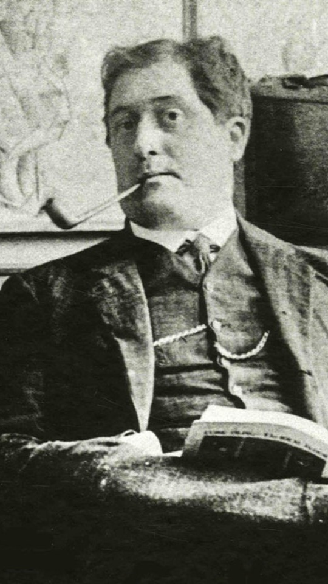

Alcools
-Apollinaire-

1913
Modernité poétique

Auteur
Apollinaire
Guillaume Apollinaire (Wilhelm de Kostrowitzky) est né à Rome d'un officier italien et d'une française originaire de la noblesse polonaise. Sa mère s'installe à Monaco en 1885 et il suit des études au lycée de Monaco, puis de Nice. En 1899, sa mère s'établit à Paris où il travaille comme employé de banque pour subvenir à ses besoins et compose ses premiers poèmes. En 1901, il part comme précepteur en Allemagne où il découvre les légendes et les paysages rhénans. A son retour à Paris en 1902, il publie l'Hérésiarque qu'il signe pour la première fois Guillaume Apollinaire. Il fréquente les milieux artistiques et devient l'ami d'artistes comme le Douanier Rousseau, Maurice de Vlaminck et Pablo Picasso qui lui fait connaître en 1907 le peintre Marie Laurencin avec laquelle il a une liaison passionnée jusqu'en 1912. Guillaume Apollinaire exerce les activités de journaliste, poète, critique d'art et conférencier. Il obtient son premier succès en 1913 en publiant Alcools qui rassemble tous ses poèmes depuis 1898. Il défend la même année la peinture contemporaine en publiant "Peintres cubistes, méditations esthétiques". En 1914, il s'engage comme artilleur dans l'armée française. Blessé à la tête en 1916, il doit être trépané et suit une longue convalescence. Guillaume Apollinaire meurt de la grippe espagnole, deux jours avant l'Armistice, le 9 novembre 1918 après avoir publié cette année-là Calligrammes, poèmes en forme de dessins et non soumis aux vers et aux rimes, dont il est l'inventeur. Il est enterré au cimetière du Père Lachaise, à Paris. Comme critique d'art, Guillaume Apollinaire a collaboré à plusieurs revues comme la Revue blanche, la Plume, le Mercure de France où il fait découvrir les avant-gardes de son époque : l'art naïf, l'art nègre, le fauvisme, le cubisme. Il est considéré comme un précurseur du surréalisme dont il a créé le nom. Pour lui, la création n'est fondée sur aucune théorie, mais doit venir de l'imagination et l'intuition et se rapprocher le plus possible de la vie, de la nature.
Resume
Alcools est un recueil pluriel, polyphonique, qui explore de nombreux aspects de la poésie, allant de l'élégie au vers libre, mélangeant le quotidien aux paysages rhénans dans une poésie qui se veut expérimentale, alliant un travail sur la forme et sur l'esthétique à un hermétisme et un art du choc. Alcools montre le poète déchiré par ses ruptures amoureuses, ruptures qui résonnent au travers de poèmes tels que Mai, Les Colchiques et, surtout, La Chanson du mal-aimé. Au sein de ses poèmes, Apollinaire abolit la temporalité interne classique mise en vigueur par Ronsard : le passé, le présent, le futur se mêlent en un seul et même univers de vin et d'ivresse. Le poète distille aussi l'espace, en mettant en scène l'univers de son enfance. Il modifie la perception poétique classique du temps et de l'espace : La Chanson du mal-aimé, Zone. Il se distingue comme le dieu poète en établissant une cosmogonie personnelle. Il réécrit les mythes fondateurs avec Orphée. Il se réclame d'Apollon. Mais il réinvente aussi la forme poétique dans son style : il détruit la conception classique syntaxique de Ronsard. Il est le précurseur du surréalisme et consacre une nouvelle poésie d'ivresse et de mythes. C'est après avoir assisté à une lecture par Blaise Cendrars de sa future publication, La Prose du Transsibérien et de la petite Jehanne de France, qu'Apollinaire aurait décidé de transformer à son tour son futur recueil. Il y plaça Zone en ouverture, ce qui lui donna valeur de manifeste, et supprima toute trace de ponctuation, s'inspirant de l'innovation de Cendrars. Alcools ayant été publié avant la Prose du Transsibérien, on attribue souvent à tort la primeur de la suppression de la ponctuation à Apollinaire. Selon lui, en poésie, le rythme du vers et de la respiration suffisent. Au-delà de cette considération, cette suppression lui permit de faire naître des images inédites en rapprochant certains termes comme par accident. On pense par exemple au vers de Zone : « Ils croient en Dieu ils prient les femmes allaitent des enfants » où, dans une première lecture, à cause de l'utilisation transitive du verbe « croire », l'absence de ponctuation conduit à lire le verbe « prier » comme étant lui aussi transitif, « les femmes » apparaissant alors comme complément d'objet direct du verbe. Ce procédé crée également des ambiguïtés de sens, enrichissant les lectures possibles.
Personnages
- Le poète : Le « mal-aimé » symbolise la figure du poète. ...
- Les femmes aimées : Annie Playden et Marie Laurencin.
- Les dieux :Ils se dégradent au fur et à mesure des strophes. ...
- Paris :Ville divinisée sous la Révolution par le biais de ses sacrifices
Themes
• La modernité :
Apollinaire s’interroge sur la pertinence de la poésie après la Première Guerre mondiale, période où tous les codes avaient changé et les repères avaient disparu. C’est ainsi qu’il choisit d’écrire en vers libres et décide d’explorer de nouveaux thèmes. Il célèbre la ville industrielle et les innovations de l’aviation et de l’automobile. En choisissant d’écrire en vers libres, il invente un nouveau mode d’expression. Avec ses calligrammes, il invente un art à part entière, à cheval entre la poésie et le dessin. C’est d’ailleurs Apollinaire qui invente le mot Calligramme, un amalgame du mot calligraphie et du mot idéogramme.
• La guerre :
la guerre a eu un impact significatif sur le poète, qui transparaît davantage dans le recueil de poèmes intitulé Poèmes à Lou. L’amour : Les Poèmes à Lou célèbrent l’amour de la femme. Dans « La chanson du mal-aimé » et “Le Pont Mirabeau”, le poète évoque son amour malheureux et chante son désespoir de l’amour perdu.